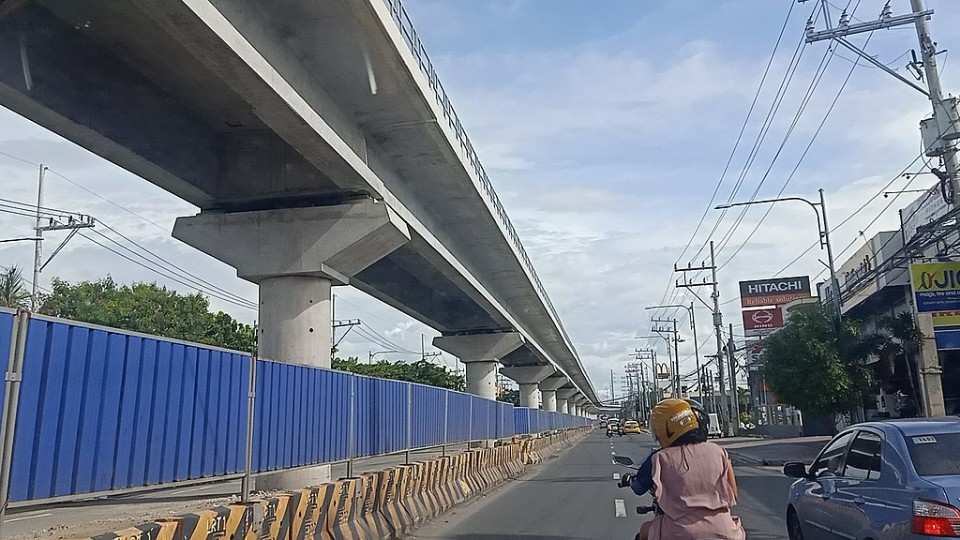
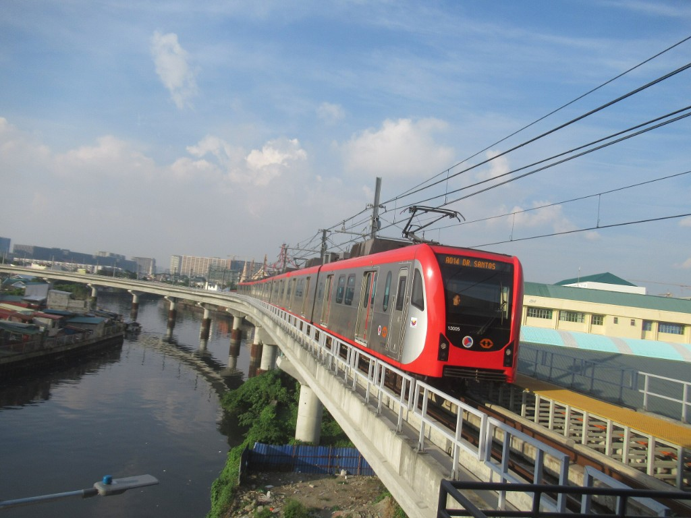
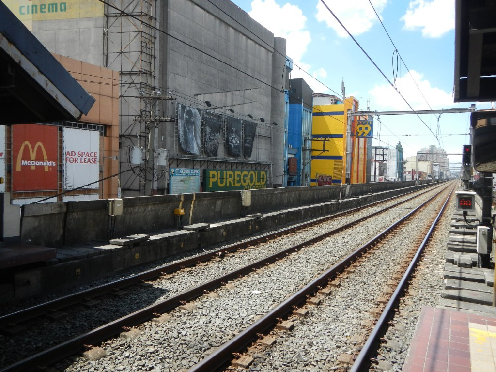

LRT Line 1
The Light Rail Transit Line 1, commonly referred to as LRT Line 1 or LRT-1, is a light rapid transit system line in Metro Manila, Philippines, operated by Light Rail Manila Corporation (LRMC) and owned by the Light Rail Transit Authority (LRTA) as part of the Manila Light Rail Transit System. Originally referred to as Metrorail and the Yellow Line, LRT Line 1 was reclassified to be the Green Line in 2012. It travels in a general north–south direction from Dr. Santos to Monumento, and then east–west from Monumento to Fernando Poe Jr. Currently, the line consists of 25 stations and runs on 26 kilometers of fully elevated route. Although it has the characteristics of light rail, such as with the type of rolling stock used, it is more akin to a rapid transit system owing to its total grade separation and high passenger throughput.
First envisioned in a 1977 study conducted by Freeman Fox and Associates which suggested a street-level railway in Manila, the government revised this recommendation to an elevated system. In 1980, President Ferdinand Marcos created the LRTA and construction of the line began the following year. With its partial opening in 1984 and completion the following year, it became the first rapid transit service in Southeast Asia. LRT Line 1 would become one of the busiest among Metro Manila's three rapid transit lines, as it currently serves roughly 323,000 passengers daily.
The line is integrated with the public transit system in Metro Manila, and passengers also take various forms of road-based public transport, such as buses and jeepneys, to and from a station to reach their intended destination. Although the line aimed to reduce traffic congestion and travel times in Metro Manila, the transportation system has only been partially successful due to the rising number of motor vehicles and rapid urbanization. Expanding the network's revenue line to accommodate more passengers, through extension projects, is set on resolving this problem.
First envisioned in a 1977 study conducted by Freeman Fox and Associates which suggested a street-level railway in Manila, the government revised this recommendation to an elevated system. In 1980, President Ferdinand Marcos created the LRTA and construction of the line began the following year. With its partial opening in 1984 and completion the following year, it became the first rapid transit service in Southeast Asia. LRT Line 1 would become one of the busiest among Metro Manila's three rapid transit lines, as it currently serves roughly 323,000 passengers daily.
The line is integrated with the public transit system in Metro Manila, and passengers also take various forms of road-based public transport, such as buses and jeepneys, to and from a station to reach their intended destination. Although the line aimed to reduce traffic congestion and travel times in Metro Manila, the transportation system has only been partially successful due to the rising number of motor vehicles and rapid urbanization. Expanding the network's revenue line to accommodate more passengers, through extension projects, is set on resolving this problem.
| Light Rail Transit Line 1 | |
|---|---|
|
A northbound LRTA 13000 class train arriving at Dr. Santos station in November 2024
|
|
| Overview | |
| Native Name | Unang Linya ng Sistema ng Magaang Riles Panlulan ng Maynila |
| Status | Operational |
| Owner | Light Rail Transit Authority |
| Line Number | 1 |
| Locale | Metro Manila, Philippines |
| Termini | Dr. Santos
Fernando Poe Jr. |
| Stations |
Present: 25
Future: 31 |
| Websites | LRTA 
LRMC |
| Service | |
| Type | Light rapid transit |
| System | Manila Light Rail Transit System |
| Services | 1 |
| Operator(s) | Light Rail Manila Corporation
Former operators
|
| Depot(s) | Baclaran
Zapote (future) |
| Rolling stock | LRTA 1000 class
LRTA 1100 class LRTA 1200 class LRTA 13000 class |
| Daily ridership | 323,000 (2024) |
| Yearly ridership | 88 million (2024) |
| History | |
| Commenced | September 11, 1981 |
| Opened | December 1, 1984 |
| Last extension opened | November 16, 2024 |
| Completed | May 12, 1985 |
| Privatized | September 12, 2015 |
| Technical | |
| Line length | 26 km |
| Number of tracks | Double |
| Character | Elevated |
| Track gauge | 1,435 mm standard gauge |
| Loading gauge | 4,050 mm × 2,600 mm |
| Minimum radius | Mainline: 100 m
Depot: 25 m |
| Electrification | 750 V DC overhead wires |
| Operating speed | 60 km/h |
| Signaling | Alstom Atlas 100 ETCS Level 1
Former systems
|
| Maximum incline | Mainline: 3.535%
Depot spur line: 4% |
| Average inter-station distance | 1030 m |
Planning and funding
The Metro Manila Transport, Land Use, and Development Planning Project (MMETROPLAN), a fourteen-month study conducted by Freeman Fox and Associates and funded by the World Bank, recommended the construction of a street-level (at-grade) light rail line in Manila and the proposed four lines that were included in the study that would run along Rizal Avenue, Taft Avenue, España Boulevard, Quezon Avenue, and Shaw Boulevard. A year later, public works secretary Alfredo Juinio announced that the system would consist of streetcars that were seen before the war, and they would accept bids for the project in the next few months.Following a review by the Ministry of Transportation and Communications, later the Department of Transportation (DOTr), the proposal was revised to an elevated railway to avoid building over the city's many intersections, while the option for an underground line was rejected due to the high water table in Manila and has a half a meter below sea level; this raised the project's cost from ₱1.5 billion to ₱2 billion. An alignment along Rizal and Taft avenues, which spanned from Monumento, Caloocan in the north to Baclaran, Pasay in the south, was selected because it followed a relatively straight path for most of its route.
On July 12, 1980, President Ferdinand Marcos created the Light Rail Transit Authority (LRTA) and assigned First Lady and Governor of Metro Manila Imelda Marcos as its chairman. While the LRTA confined its roles to policy making, fare regulation, and future planning, the line's operations were assigned to Meralco Transit Organization (Metro, Inc.), a sister company of Meralco. The line came to be referred to as Metrorail. During that month, a Belgian consortium was chosen over other bids from France, Germany, Japan, and Switzerland.
The Belgian Government granted a ₱300 million soft and interest-free loan for the project's construction, with a repayment period of 30 years. Additional funding was later sourced from a ₱700 million loan, provided by a Belgian consortium consisting of ACEC, La Brugeoise et Nivelles, Tractionnel Engineering International, and Transurb Consult. The consortium also supplied the line's first light rail vehicles, power control, signalling, and telecommunications, as well as provided training and technical assistance. Designed as a public utility rather than a profit center, the line was expected to incur a deficit through 1993, but complete its repayments within a period of 20 years.
Construction and opening
The government-owned Construction Development Corporation of the Philippines was the project's sole contractor. Single column cast-in-place concrete piers carrying precast concrete T-girders and a concrete deck slab were used for the original line from Monumento to Baclaran. The columns are spaced apart by 20 to 27 meters rising from a cap on top of bored or driven concrete piles. Four of the 2.1-meter wide girders are side by side in each span to accommodate bidirectional standard-gauge railway tracks located 6.1 meters above the street level.Driven piles were originally used for 80 percent of the project, with spread footings being used for the remaining portion. However, during construction, it was determined that bored piles should be utilized in some areas to mitigate noise and avoid potential damage to nearby buildings. Additionally, the original use of stockpiled precast piles caused clutter on the streets during construction.
In 1981, an economic recession hit the country, and the government was unable to provide counterpart funds for civil works and right-of-way acquisition, which amounted to 60 percent of the project's total cost. This led to a delay in construction. Work finally resumed after the economic recession in September of that year along Taft Avenue, between Epifanio de los Santos Avenue (EDSA) and Libertad Street. In order to make way for Carriedo station and a segment of tracks approaching the Pasig River, a department store and a classroom building nearby FEATI University were demolished.
The southern section known as Taft Line, which mostly traverses Taft Avenue between the Baclaran and Arroceros stations, was inaugurated on September 11, 1984, by President Ferdinand Marcos. Commercial operations along this section commenced on December 1. It was later extended when Carriedo station was opened on April 14, 1984. The line became fully operational on May 12, 1985, when the Rizal Line, the northern section traversing Rizal Avenue between Carriedo and Monumento, was opened. During the first several years, two-car trains that could accommodate up to 748 passengers were utilized. This amounted to a capacity of 20,000 passengers per direction.
In July 2000, with the looming expiration of its contract with the LRTA, a labor strike was launched by employees of Meralco Transit Organization (METRO, Inc.). It paralyzed the operations of the line for a week. The LRTA decided not to renew its contract with METRO, Inc. that expired on July 31, 2000, and the former assumed operational responsibility.
Capacity expansion and facelift
The trains procured under the first phase of the capacity expansion in November 2006.

The trains procured under the second phase of the capacity expansion undergoing a test run in November 2006.
The implementation of the project was delayed for three years amid allegations of irregularities with the bidding conducted by the LRTA. The joint venture of Sumitomo Corporation and Itochu was awarded the contract and was given the go-ahead in March 2005, paving the way for the project to move forward. The second phase of the capacity expansion project was divided into two packages. Package A involves the procurement of twelve four-car trains, upgrades to the signaling and communications systems, and upgrades to the stations and depot. Package B, on the other hand, involves the procurement and installation of air conditioning units for the 1000 class trains, replacement of faulty air conditioning units of the 1100 class trains, renovation of 4 kilometers of railway track and railway sleepers, and procurement of equipment and spare parts used for track works. The installation of equipment for the automatic fare collection system was also included. The project was completed in June 2009, five and a half years behind its initial deadline.
North extension
With the completion of the first phase of the MRT Line 3 in 1999, there were plans to extend Line 3 towards Monumento (Phase 2) to create a seamless rail loop around Metro Manila. However, the extension was shelved by then-President Gloria Macapagal Arroyo in favor of a 5.7-kilometer extension of Line 1 to a common station at North Avenue. The project involved the construction of three stations: Balintawak, Fernando Poe Jr., and the North Triangle Common Station. However, due to disputes in the common station's location, the station would only begin construction in 2017, with opening slated for 2025.
Construction began in June 2008. The joint venture of DMCI and First Balfour built the viaduct and the two stations, while the electrical and mechanical systems contracts were assigned to different contractors.[a] Balintawak station opened on March 22, 2010, with FPJ station opening exactly seven months later.
In September 2008, then-mayor of Caloocan Enrico Echiverri, petitioned the government to construct Malvar station, an intemediary station between Balintawak and Monumento. Two months later, two thousand residents from Barangay Bagong Barrio, where the station would be built, staged a protest along EDSA to urge the government to build the station. Malvar station would eventually be approved in July 2009. Though it was reported that the feasibility study for the station was completed, construction has yet to start.
Planned line merge with MRT Line 3
A study about the integration of Metro Manila's railway network, published by JICA in 2001, proposes the through-operation of both LRT-1 and the MRT-3, which would have interoperability to create a seamless loop around the region. The trains would start from Monumento before turning back to the mainline of LRT 1 at Pasay Rotonda.Proposals to fully unite LRT-1 and MRT-3 operations and systems have been pitched but has not been pursued so far. Feasibility tests for this proposition included LRT-1 trains visiting MRT 3 depot facilities and running them on the entire line. Even if the structure gauge connecting the two rail lines has been successfully tested, commuters have to go down at Fernando Poe Jr. station of LRT Line 1 and walk over or take a tricycle or jeepney for the 1-kilometer distance to the North Avenue station of MRT Line 3. In 2011, the Department of Transportation, under Transportation Secretary Jose de Jesus, launched an auction for a temporary five-year operations and maintenance contract for the two lines; the bidding was set for July. Over twenty-four companies expressed interest to bid which included Ayala Corporation, Bombardier Transportation, CAF, Metro Pacific, Sumitomo Corporation, Siemens, DMCI Holdings, San Miguel Corporation, and others. De Jesus later resigned from the DOTC in June for personal reasons, and his successor, Mar Roxas, halted the auction process and was later shelved.
The proposal to integrate the LRT Line 1 and MRT Line 3 was revived in June 2024 by Metro Pacific Investments. The company, which holds a majority stake in LRT Line 1 operator Light Rail Manila Corporation, submitted an unsolicited proposal to integrate the operations of the two lines. It is now under review by DOTr and has been endorsed to the former by the PPP Center, after initially rejecting it due to being incomplete in substance. The proposed line merger will run both LRT-1 and MRT-3 trains on the same track, while resolving outstanding issues such as the Dalian trains, supply chain and potential line expansion.
Cavite extension


Plans to build a new railway line to Cavite were pitched in the 1990s as the original LRT Line 6, which would have been running between Baclaran station of LRT Line 1 and Bacoor for about 12 kilometers, but the actual route is 8 kilometers from Baclaran to Zapote, and it would have also been using a heavy rail vehicle (HRV) consisting of six cars with a formation of 10 units (60 units) with a maximum speed of 60 kilometers per hour and a 3-minute headway, as well as the electrification would be using a 25 kV AC overhead lines. The project proposal was submitted by the Philippine Reclamation Authority, and the Australia-based TGM completed the pre-feasibility study in 1997. The proposal was also identified in the Metro Manila Urban Transportation Integration Study Master Plan by the Japan International Cooperation Agency. This would have constructed a 12-to-15-kilometer elevated railway from Baclaran to Imus, with extensions leading to Cavite City (10 km), Dasmariñas City (14.5 km), Airport, Sucat, and Alabang. However, the project never materialized.
Construction of the Cavite Extension Project viaduct along Ninoy Aquino Avenue in July 2021
Construction of Manuyo Uno station viaduct along C-5 Road Extension in April 2023.
Construction of Manila Line 1 south extension depot (Manuyo Uno station) along C-5 Road Extension in April 2023.
The girder launcher along Radial Road 1 in front of Uniwide Coastal Mall in November 2021.
Construction of the Cavite Extension Project viaduct near the Manila–Cavite Expressway in September 2021.
Planning and inception
The extension was first approved by the National Economic and Development Authority (NEDA) on August 25, 2000, while its implementing agreement was approved on January 22, 2002, to be undertaken by SNC-Lavalin as a public-private partnership project. In 2003, the company would invest more than $1 billion in the extension project. After this proposal was terminated on May 3, 2006, the government worked with International Finance Corporation, White & Case, Halcrow and other consultants to conduct an open-market invitation to tender for the extension and for a forty-year concession to run the extended line. The project was later shelved, but on February 25, 2010, President Gloria Macapagal Arroyo revived plans to extend the line to Cavite.Development
On March 22, 2012, Arroyo's successor, President Benigno Aquino III approved the ₱60-billion Cavite Extension Project. Dubbed as the biggest infrastructure project under his presidency, the bidding process started on June 4. Although it attracted huge interest from foreign and local firms, four managed to pre-qualify. However, the bidding itself failed in August 2013 due to all but one bidder withdrawing from the process due to financial risks, leaving the lone bidder—Metro Pacific Investments—submitting a conditional, non-compliant bid.The extension, at its current iteration, was approved on November 21, 2013, by the NEDA Board. The project was subsequently rebidded and on September 12, 2014, the Light Rail Manila Corporation (LRMC) was awarded the 32-year concession to operate, maintain, and extend the line to Cavite. The concession agreement was signed on October 2, with the turnover taking place on September 12, 2015. It then contracted RATP Dev, under its subsidiary RATP Dev Transdev Asia (a joint venture between Transdev and RATP Dev), to operate and maintain the line for twenty years.
Construction
The girder launcher along Radial Road 1 in front of Uniwide Coastal Mall in November 2021.
LRMC partnered with Bouygues for civil works, Alstom for the installation of the signaling and communication systems, and the RATP Dev Transdev Asia for the overall engineering, procurement, consultation, construction and assistance services. The extension was built using a full-span launching method, renowned as one of the fastest methods of construction for bridges and elevated viaducts, which cuts time and total land space needed for construction. As the first railway line to utilize the new construction method, a total of 203 pi-girders were used for the construction of the extension's first phase; the last of which was laid on February 7, 2022.
The ₱64.915 billion project has suffered cost overruns by an estimated two to three billion pesos as a result of construction delays caused by the COVID-19 pandemic and pending right-of-way issues. It is divided in three phases—the 6.2-kilometer Phase 1 covers five stations from Redemptorist to Dr. Santos, Phase 2 covering 3.2 kilometers from Las Piñas to Zapote, and Phase 3 covers the remaining 2.4 kilometers to Niog. The project would be implemented in a hybrid funding scheme, with ₱17.80 billion from the Japanese official development assistance loan, ₱39.57 billion from the LRMC, and ₱7.55 billion from the Philippine government.
Opening

LRTA 13000 class approaching Ninoy Aquino station
On December 19, 2023, the first test run along the extension was successfully conducted by Alstom using an LRTA 1100 class train. On November 15, 2024, Phase 1 of the extension was inaugurated by President Bongbong Marcos; it opened for commercial operations the following day, while the opening of phases 2 and 3 are expected by 2031. The extension project is expected increase the ridership of the line by adding over 80,000 passengers daily in the first few years upon completion, and is set to increase to a total of 650,000 daily passengers in 2028.
The line is predominantly aligned to the path of Taft Avenue (Radial Road 2) which was chosen largely due to its straight course. Later on, as Taft Avenue ends, it shifts to Rizal Avenue and Rizal Avenue Extension (Radial Road 9) then turning right on EDSA before ending at the corner of North Avenue, West Avenue, and EDSA. The south extension will span from Quirino Avenue, Harrison Avenue, and Taft Avenue Extension intersection, then would travel down from Redemptorist Road, Roxas Boulevard, and Manila–Cavite Expressway. Afterwards, it will traverse through the Parañaque River and will enter Ninoy Aquino Avenue until reaching and traversing the C5 Extension Road; and will once again enter Coastal Road, crossing the Las Piñas-Bacoor Boundary Bridge along the Zapote River, and traverse through the Alabang–Zapote Road and Aguinaldo Highway intersection, until reaching Niog station located along Aguinaldo Highway in Bacoor, Cavite.
The line links the cities of Quezon City, Caloocan, Manila, Pasay, and Parañaque, with the upcoming stations passing through the cities of Las Piñas, and Bacoor in Cavite.
Stations
The line currently serves 25 stations along its route. Following the opening of the first phase of the Cavite extension, three remaining stations, which are part of the second and third phases, are also set to start construction south of Dr. Santos by 2026. Malvar station in Caloocan was previously proposed during the construction of the northern extension located between Monumento and Balintawak, becoming a bargaining object during the entire extension line's construction in the jurisdiction of Caloocan. However, the planned Malvar station was completely shelved by the Aquino administration.Three stations serve as connecting stations between other lines in the metro. Doroteo Jose is indirectly connected to Recto of the LRT Line 2 through a covered walkway; Blumentritt is immediately above its PNR Metro Commuter Line counterpart; and EDSA is connected to the Taft Avenue station via a covered walkway. No stations are connected to other rapid transit lines within the paid areas. A connection with the Metro Manila Subway in Asia World is also planned.
LRT Line 1 stations timeline
| Date opened | Project | Stations |
|---|---|---|
| December 1, 1984 | Partial operations | Baclaran to Central Terminal |
| May 12, 1985 | Initial completion | Carriedo to Monumento |
| March 22, 2010 | North extension | Balintawak |
| October 22, 2010 | Fernando Poe Jr. | |
| November 16, 2024 | Cavite extension phase 1 | Redemptorist to Dr. Santos |
| January 2025 | North extension | North Triangle |
| 2031 | Cavite extension phases 2 and 3 | Las Piñas to Niog |
Legend
| Either under construction, proposed, unopened, or have been closed. | |
| Existing terminus |
List of stations
| Name | Distance (meters) | Connections | Location | |
|---|---|---|---|---|
| Between stations |
Total | |||
| North Triangle Common Station |
1,153 | - |
Manila MRT
Line 3 Line 7 Metro Manila Subway |
Quezon City |
| Fernando Poe Jr. | - | 0 | ||
| Balintawak | 1,870 | 1,870 | ||
| Monumento | 2,250 | 4,120 | Caloocan City |
|
| 5th Avenue | 1,087 | 5,207 | ||
| R. Papa | 954 | 6,161 | Manila City |
|
| Abad Santos | 660 | 6,821 | ||
| Blumentritt | 927 | 7,748 |
PNR
Blumentritt |
|
| Tayuman | 671 | 8,419 | ||
| Bambang | 618 | 9,037 | ||
| Doroteo Jose | 648 | 9,685 |
Manila LRT
Line 2 - Recto Manila MRT Line 8 - Lerma |
|
| Carriedo | 685 | 10,370 | ||
| Central | 725 | 11,095 | ||
| United Nations | 1,214 | 12,309 | ||
| Pedro Gil | 754 | 13,063 | ||
| Quirino | 794 | 13,857 | ||
| Vito Cruz | 827 | 14,684 | ||
| Gil Puyat | 1,061 | 15,745 | Pasay City |
|
| Libertad | 730 | 16,475 | ||
| EDSA | 1,010 | 17,485 |
Manila MRT
Line 3 - Taft Avenue |
|
| Baclaran | 588 | 18,073 | ||
| Redemptorist | 869 | 18,942 | Parañaque City |
|
| Manila International Airport |
1,303 | 20,245 | ||
| Asia World | 1,141 | 21,386 | ||
| Ninoy Aquino | 1,393 | 22,779 | ||
| Dr. Santos | 1,646 | 24,425 | ||
| Las Piñas | - | - | Las Piñas | |
| Zapote | - | - | Bacoor, Cavite |
|
| Niog | - | - | Proposed interchange with
Manila LRT Line 6 |
|
Operation
The line operates from 4:30 AM until 10:15 PM on weekdays, and 5:00 AM until 9:45 PM on weekends and holidays. It operates almost every day of the year unless otherwise announced. Special schedules are announced via the PA system in every station and also in newspapers and other mass media. During Holy Week, a public holiday in the Philippines, the rail line is closed for annual maintenance, owing to fewer commuters and traffic around the metro. Normal operation resumes after Easter Sunday. During the Christmas season, operating hours are shortened to allow its staff to celebrate the holidays with their families.
Baclaran station in December 2022
Station layout and accessibility
The southbound platform display in Redemptorist station.
Folding bicycles are allowed to be brought into trains provided that they do not exceed the LRTA's baggage size limitations of 2 by 2 feet. The last cars of each train are also designated as "green zones", where folding bicycle users can ride with their bikes.
All stations have side platforms except for Baclaran, which has one side and one island platform. Due to the high patronage of the line, part of the platform corresponding to the front car of the train is cordoned off for the use of women, children, elderly and disabled passengers.
Shops and services
Inside the concourse of some stations are stalls or shops where people can buy food or drinks. Stalls vary by station, and some have fast food stalls. The number of stalls also varies by station, and some stations tend to have a wide variety.Stations such as Fernando Poe Jr. (WalterMart Muñoz), Balintawak (Ayala Malls Cloverleaf), Monumento (SM City Grand Central and Victory Central Mall Caloocan), Tayuman (SM City San Lazaro), Carriedo (Good Earth Plaza and SM Quiapo), Central Terminal (SM City Manila), Pedro Gil (Robinsons Manila), Vito Cruz (University Mall), Libertad (Victory Pasay Mall and Welcome Plaza), EDSA (Metro Point Mall), Baclaran (Baclaran Super Mall), Redemptorist (Parqal), Dr. Santos (SM City Sucat), and the upcoming North Triangle (SM North EDSA and Trinoma) are connected to or are near shopping malls and/or other large shopping areas, where commuters are offered more shopping varieties.
It is also accessible to major transport terminals in Metro Manila such as Avenida Bus Terminal via Doroteo Jose, Plaza Lawton via Central Terminal, Buendia Bus Terminal via Gil Puyat, Pasay Rotonda via EDSA, Parañaque Integrated Terminal Exchange via Asia World, and the upcoming North Triangle Common Station.
The current designed daily ridership of the line is 560,000 passengers and currently aims to increase the number of passengers being served on the line to more than 800,000 passengers, as the line's south extension is set to be fully operational by 2031. On 2022, the line served a daily average of 216,667, while the annual total of passengers served reached 78 million.
On January 9, 2012, the line served a record 620,987 passengers during the Feast of the Black Nazarene, and since the day falls on a working weekday. In 2018, the line carried 300,000 to 500,000 passengers daily, due to the increased number of trains, from 86 vehicles to 113 vehicles available for daily trips. This gradually reduces the waiting time of passengers from 5 minutes to as much as 2 to 3.5 minutes. It also carried as much as 14.63 million passengers monthly in 2018. However, as of 2023, the waiting time has been officially reported at 5 to 6 minutes. On the first few quarters of 2024, the line served a daily average ridership of 298,740 passengers, and in the later months, the line served over 323,000 passengers daily.
The line, like all other lines in Metro Manila, uses a distance-based fare structure, with fares ranging from 14 to 35 pesos, depending on the destination. Children below 1.02 meters (the height of a fare gate) may ride for free.
Different types of rolling stock at the line's depot in Baclaran.
Rolling stocks of LRT Line 1

First-generation LRTA 1000 class (1984)

Second-generation LRTA 1100 class (1999)

Third-generation LRTA 1200 class (2006)

Fourth-generation LRTA 13000 class (2023)
The line utlizes a variety of trains in its history and has used three different configurations, such as two-car, three-car, and four-car trainsets. The two-car trains are the original first-generation BN and ACEC trains (railway cars numbered from 1000). Most were transformed into three-car trains, although a limited number of two-car trains remain in service. The four-car trains are the more modern second-generation Hyundai Precision / Adtranz (1100), third-generation Kinki Sharyo / Nippon Sharyo (1200), and fourth-generation Construcciones y Auxiliar de Ferrocarriles (CAF) / Mitsubishi (13000). There are 259 railway cars grouped into 126 trains serving the line: 63 of these are first-generation, 28 second-generation, 48 third-generation, and 120 fourth-generation cars. Some of the cars, especially those from 1st generation, were decommissioned due to them being cannibalized or involved in accidents. Such as 1037, which was severely damaged in the Rizal Day bombings in 2000, it was subsequently decommissioned afterwards and eventually scrapped. The trains are permitted to run at a maximum operating speed of 60 kilometers per hour.
Since 1999, the line's fleet has been modernized to cope with increasing numbers of passengers. In that year, seven four-car second-generation trains from Hyundai Precision were commissioned, providing an increased train capacity of 1,358 passengers while the original two-car trains capable of holding 748 passengers were transformed into three-car trains with room for 1,122. In 2006, twelve new trains made in Japan by Kinki Sharyo and Nippon Sharyo were commissioned, providing a capacity of 1,388 passengers. The fourth-generation trains, ordered in 2017 to replace the first-generation trains, were delivered in batches from 2021 to 2022 before entering revenue service on July 20, 2023.
Prior to 1999, the first-generation trains were notorious for its lack of air conditioning, relying instead on forced-air roof ventilation for cooling. This, however, resulted in hot and stuffy rides. Although the entry of the second-generation trains in 1999 marked the introduction of air-conditioned trains in the line, the problem was fully addressed after a preparatory rehabilitation program completed in 2001 allowed the installation of air conditioners to the older rolling stock in 2004.
LRMC has also built an in-house laboratory for production, manufacturing, fabrication and repair of train parts that are no longer available in the market.
The Passenger Assist Railway Display System, a passenger information system powered by LCD screens installed near the ceiling of the train that shows news, advertisements, current train location, arrivals and station layouts, are already installed in the third-generation trains, along with the trains of Line 2 and the first-generation trains of Line 3. By 2023, these units were discreetly removed and, prior to removal, were no longer operating.
Depot
Different types of rolling stock at the line's depot in Baclaran, Pasay. The newer fourth-generation trains are the red trains on the right.
Under-construction satellite depot in Barangay Zapote V, Bacoor, Cavite
The line maintains an at-grade depot in Pasay, near Baclaran, Parañaque. It serves as the center of the operations and maintenance of the line. It is connected to the mainline through a spur line. Before its expansion, the depot had a capacity of 145 light rail vehicles and an area of 6.4 hectares. It was expanded to an area of 10.6 hectares to accommodate 197 vehicles, with Shimizu Corporation and First Balfour implementing the project. Expansion works were completed after the depot was inaugurated on February 23, 2022.
A satellite depot is being constructed in Zapote V, Bacoor, Cavite as part of the line's south extension project. When completed, the satellite depot will handle 72 light rail vehicles and is also the location of the namesake station.
Signaling
Two-aspect signal lights (Alstom) near Doroteo Jose station
The original signaling system used in the LRT Line 1 was based on fixed block and relay-type trackside systems. Trains had an automatic train stop system that activates if the train passes by a red signal or over-speeding. Based on a procurement plan published by the Light Rail Transit Authority, most of the signaling equipment, including track circuits, was supplied by ACEC.
In 2007, as part of a capacity expansion project, the original system was replaced with a train control system based on automatic train protection (ATP) and automatic train supervision (ATS); the fixed-block system was provided by Siemens Transportation Systems and BBR Verkehrstechnik. The ATP system monitors the speed of the trains, while the ATS system directs train operations. Prior to the 2022 upgrade, the signalling system was designed to operate at a headway of 112 seconds. Aside from the ATP and ATS systems, its subsystems include train detection through axle counters, and microprocessor-based interlocking.
The signaling system was again upgraded as part of the line's south extension. Alstom was awarded a contract in February 2016 to supply its Atlas 100 ETCS Level 1 solution for the south extension and upgrade the existing system. Between November 2021 and January 2022, the new system underwent testing and commissioning. The Light Rail Manila Corporation (LRMC) announced the completion of the upgrades on February 1, 2022.
Tracks

LRT Line 1 uses a combination of ballasted (bottom left), slab (top), and concrete plinth (bottom right) tracks. Ballasted tracks are found in the original line, while ballastless and plinth sections are found on newer sections.
The tracks in the original 13.8-kilometer line consist of 50-kilogram-per-meter rails designed to the EB 50T rail profile, while the tracks in the future extension line consist of 54-kilogram-per-meter rails designed to the UIC 54 rail profile.
Due to the deterioration of the rail tracks in the original line, speed restrictions were implemented in 2011, decreasing the line's operating speed limit to 40 kilometers per hour, except for the north extension, in which trains continued to run at 60 km/h. In 2012, a contract to replace 23 kilometers of rails was awarded to the joint venture of Oriental and Motolite Marketing Corporation, Korail, Erin-Marty Fabricators Company, Inc., and Jorgman Construction and Development Corporation. However, there were delays in the project implementation until February 2014, when the then-Department of Transportation and Communications issued a notice to proceed for the joint venture. The first phase of the replacement started in 2014, while the rails at Monumento station were replaced in March 2015. The first phase of the rail replacement was completed in December 2015.
The second and final phase of replacement works commenced in August 2016 by the Light Rail Manila Corporation, which contracted Joratech to replace 26,458 lineal meters of rails and was completed in 2017. This was intended to increase the operating speed from 40 kilometers per hour to 60 kilometers per hour and was achieved on April 5, 2021.
Rizal Day bombings
On December 30, 2000, during the Rizal Day, a 1000 class LRV train (Car number 1037) was involved in the Rizal Day bombings at Blumentritt station. The attack on the line killed some 22 people and injured hundreds. Eight members of both Jemaah Islamiyah and the Moro Islamic Liberation Front (MILF), which include Hambal, Asia's most wanted man, and Fathur Rahman al-Ghozi, were charged with plotting and masterminding the attacks in 2003, some three years after the attacks. Three suspects were put on trial, with al-Ghozi receiving 17 years in prison due to the illegal possession of explosives. Al-Ghozi later died in a firefight after attempting to escape from prison.Other incidents
- On January 3, 2008, a fire blazed at a shopping mall in Baclaran. Due to the smoke, the Baclaran station was temporarily closed. A provisional service was implemented between EDSA and Monumento (at the time, the north extension was not opened yet), with southbound trains still proceeding towards Baclaran to only serve as a turnback siding. The station remained closed the following day until it was reopened a few days later.
- On August 11, 2008, a fire blazed in a mall near the Baclaran station. The station was closed to the public until the station was reopened on August 13.
- On December 8, 2008, a train encountered a glitch while approaching Carriedo station.
- On June 24, 2010, two trains (1000 and 1200 class) collided at Balintawak station. As a result, LRVs 1248 and 1247 sustained damage. There were plans to restore it, but the involved cars remain idle as of 2022.
- On February 18, 2011, two trains (1000 and 1200 class) collided near Fernando Poe Jr. Station in Quezon City at the reversing tracks, around a kilometer away to the east. There were no passengers onboard when the incident happened. The cause of the collision is yet to be determined, whether due to driver error or technical malfunction.
- On April 15, 2011, a door malfunction disrupted the operations of Line 1 at Blumentritt station.
- On June 21, 2011, at 8:00 AM, a train suffered a short circuit in one of its electrical components at Libertad station. On the same day, at 2:23 PM, a power cable was hit by lightning, disrupting the line's operations for three hours.
- On August 30, 2012, at 5:50 AM, a woman committed suicide after jumping in front of an approaching train at EDSA station. Operations were disrupted until operations resumed at 9:40 AM.
- On December 21, 2012, a train stalled at the Monumento station.
- On November 14, 2014, a signaling fault at Fernando Poe Jr. station limited the operations between Monumento and Baclaran stations. The situation normalized at 3:57 PM.
- On May 23, 2015, thousands of passengers were stranded after two trains (1000 and 1200 class) collided near the Monumento station. A train driver was hurt after the impact caused his head to slam into the dashboard of the train. The accident, later revealed to be caused by power fluctuation that affected the signaling system, forced passengers to alight from the station until services was restored around 1:00 PM at the same day.
- On March 10, 2016, a 1st generation train car door was left open while running between Central Terminal and Pedro Gil stations. The problem was fixed at the Pedro Gil station.
- On March 22, 2016, the doors of a 1st generation train car at the Central Terminal station failed to open, leaving passengers trapped inside the train.
- On September 26, 2016, a faulty door in a 1st generation train car suddenly slammed shut in less than a second. No one was injured.
- On November 6, 2017, a man's leg got stuck when a train door closed at the Gil Puyat station. The man was dragged at the platform when the train was moving, leaving the man with severe injuries. The man was then sent to a nearby hospital, where he was confined in an intensive care unit. According to a report, a number of trains, particularly the 1000 class trains, do not have sensors, that detects an object between doors.
- On November 27, 2017, an 1100 class train door malfunctioned after a passenger forcibly opened it at Vito Cruz station, causing the sensor to malfunction. The train continued its journey with the door left open, and a passenger recorded this incident on camera.
- On February 20, 2018, at around 6:00 AM, a train at R. Papa station unloaded 120 passengers after the air pressure gauge inside the train malfunctioned. The operations returned to normal 30 minutes later.
- On July 21, 2018, at around 6:00 AM, a contact wire sparked near Libertad station. A provisional service between Fernando Poe Jr. and United Nations stations was implemented. Normal operations resumed at 2:59 PM after the cable was fixed.
- On September 26, 2018, a faulty 1st generation train door was unable to open at the Balintawak station. A passenger pushed the door open and was able to disembark. The next passenger pushed the door but it abruptly closed on him but managed to get through.
- On October 3, 2019, a mechanical problem limited the LRT-1 operations between Monumento and Baclaran stations. The operations returned to normal at 1:50 AM.
- On November 6, 2020, a 1st generation train car emitted smoke at Gil Puyat station at 2:00 PM due to a catenary fault. Passengers were evacuated, and the line implemented a provisional service from Balintawak to Central Terminal and vice versa. The situation normalized at 8:00 PM.
- On April 4, 2022, a train suffered a glitch at Tayuman station, causing a speed restriction of 25 kilometers per hour. Operations normalized at 7:34 AM.
- On February 17, 2023, operations were limited between Fernando Poe Jr. and Gil Puyat due to electrical problems at Libertad station.
- On April 13, 2023, a malfunction occurred at the station, causing LRT Line 1 to go on limited operations from Gil Puyat to Roosevelt beginning at 1:40 PM.
- On April 14, 2023, at 10:17 AM, a speed restriction of 25 kilometers per hour was put in place in the line due to the reported fault of the affected LRV. At 10:25 AM, the operations stop in whole line due to the fault of affected train at Bambang station northbound and the line implemented a provisional service from Baclaran to Central Terminal and vice versa at 10:52 AM. Operations normalized from Baclaran to Fernando Poe Jr. and vice versa at 11:01 AM.
- On August 19, 2023, a 26-year-old passenger jumped onto the tracks at Blumentritt Station just as a train was approaching. The train operator swiftly activated the emergency brake, preventing a catastrophe. Provisional service was implemented from Baclaran to Central and vise versa at 6:12 AM. The passenger was successfully rescued by first responders at 6:33 AM. Despite suffering head injuries and a severed left foot, the passenger is now in stable condition after receiving prompt medical attention. Operations resumed by 6:44 AM.
- On August 23, 2023, around 8:00 AM, a male passenger's fingers were injured as he held onto the door of a 1st generation train at Monumento station. Another passenger pressed the emergency button, prompting the opening of the door. Platform security personnel promptly assisted the injured passenger, offering to take him to Central Terminal station, but he declined and opted for first-aid treatment at Monumento station for his minor right thumb injury. The post by Mhina C. Fabre went viral on September 4, 2023. According to a report, certain trains, particularly the 1st generation ones, lack sensors to detect objects between doors.
- On August 24, 2023, at 12:32 PM, a 2nd generation trainset experienced a mechanical problem while traveling from EDSA Station to Baclaran Station, leading to partial operations between Gil Puyat and Fernando Poe Jr. stations. Full operations resumed on August 26, 2023, at 10:30 AM.
- On September 17, 2023, at 2:41 PM, a 4th generation trainset encountered a catenary fault issue at Balintawak station southbound, causing partial disruptions between Baclaran and Monumento stations. Full operations were restored the next day.
- On February 1, 2024, at 6:43 AM, a speed restriction of 25 kilometers per hour was imposed on the line due to a reported fault with the 4th generation train (set 15) at Libertad station. Operations were halted at 6:51 AM, and normalcy was restored by 7:43 AM.
- On June 25, 2024, in the afternoon, the Manila Police District clarified that a 50-year-old woman who was initially reported to have jumped onto the LRT-1 tracks actually lost consciousness and fell onto the tracks. The incident happened at Doroteo Jose Station, causing the temporary suspension of LRT-1 operations. The woman has a history of hypertension and stroke and is still hospitalized.
- On October 24, 2024, amidst the onslaught of Severe Tropical Storm Kristine, two separate incidents occurred. A tree fell on an electrical post between the EDSA and Libertad stations, disrupting the power supply in the area. As a result, limited operations were implemented between Fernando Poe Jr. and Central Terminal stations. Additionally, this was preceded by a separate electrical fault that occurred between the Pedro Gil and Quirino stations, which initially resulted in a 25 km/h speed restriction, until the whole line stopped running to allow for repairs. Full operations resumed at 6:10 AM the next day.
- On January 17, 2025, over 40 homes and 10 establishments in Baclaran were raided by Meralco after a complaint was filed by LRMC that they were illegally connected to the electricity meter at Baclaran station.
- ^ List of contractors:
Signaling: DMCI-BETA-TEWET JV
Telecommunications: Alcatel-Lucent
Fare collection system: AP Trans SA
Trackworks: Daxi-Frateur de Pourcq JV
Light Rail Transit Line 1 by Justin - official music video